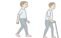

輔具建議
01
/02
主選單
個案基本資料
姓名
身分證
能力分級
分級一
可以跑跳，上下樓梯不需扶欄杆
分級二
能放手行走，或拿1支單點柺杖行走
可獨立行走
非獨立行走

分級三
扶持助行器才能行走
(必須用 大底面四腳柺 或 雙側枴杖才能走亦屬之)
可獨立行走
非獨立行走
分級四
無法行走，但在一般輪椅上可坐穩
扶持可站立
扶持無法站
能在床邊坐穩
下肢無明顯攣縮
分級五
一般輪椅上無法坐穩，須高背輪椅
其他
鼻胃管
壓瘡
翻身
床上坐起
上肢動作能力
認知
能操作電動輪椅/代步車
不能操作電動椅/代步車
視覺
能操作電動輪椅/代步車
不能操作電動椅/代步車
請標示以下列
使用中
/
建議添增
的輔具
協助步行
推薦
1
1
進食
推薦
請選擇
123
協助步行
推薦
1
1
進食
推薦
請選擇
123
下一步